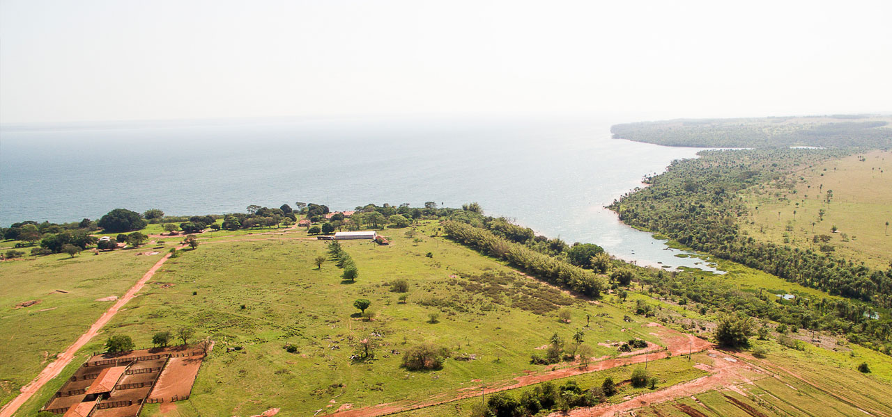
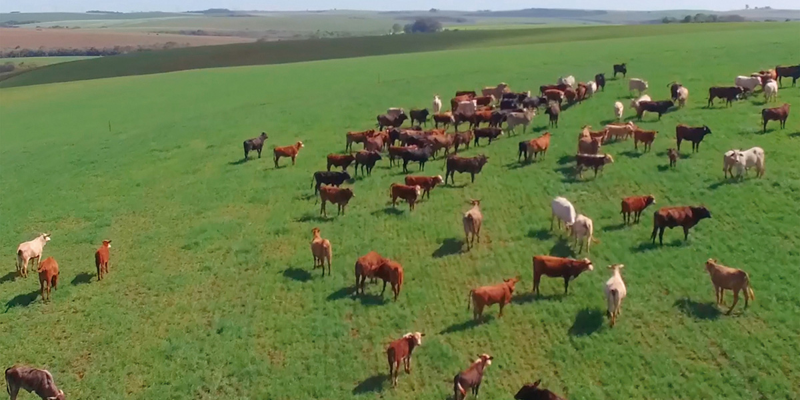
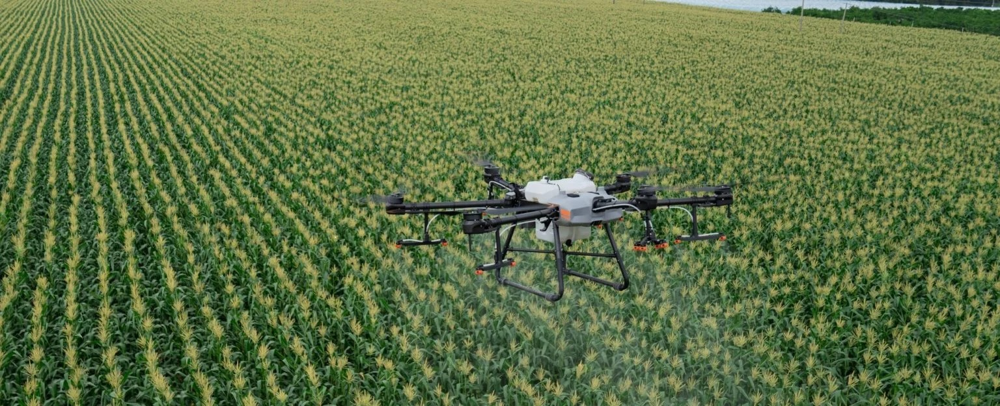
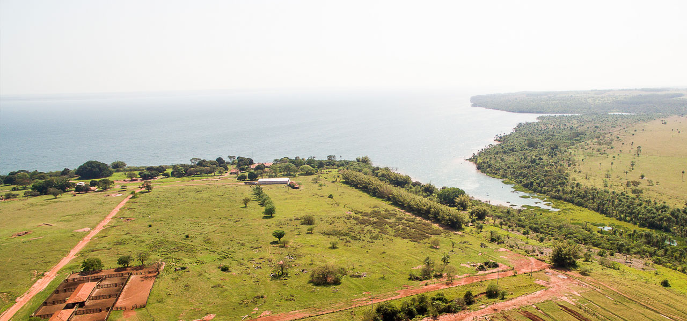
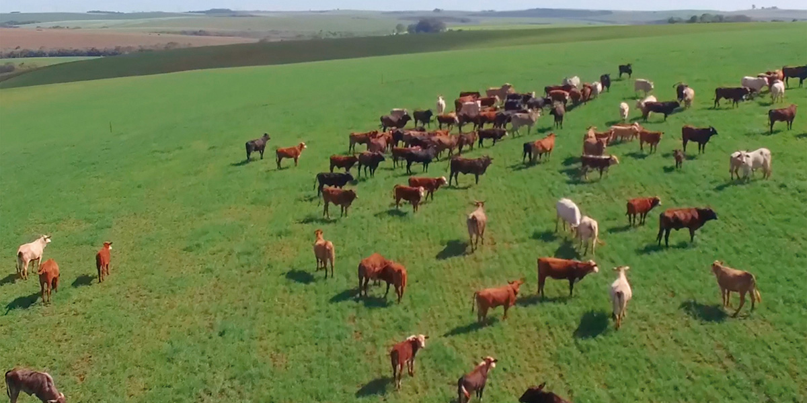
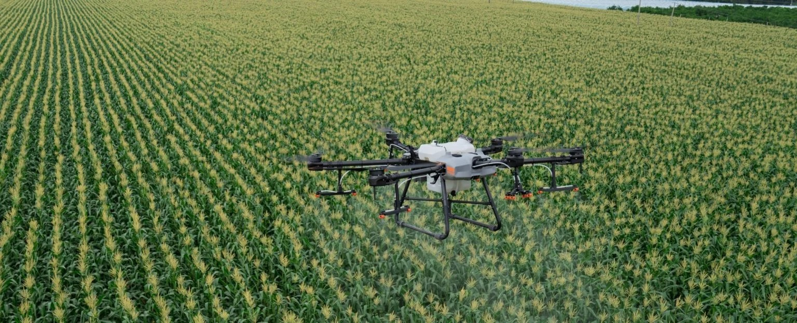

Bem-vindo
Descubra como os drones estão revolucionando a agricultura moderna, trazendo eficiência e inovação para o campo.

Veja como os drones estão transformando a agricultura
Benefícios do Uso de Drones na Agricultura
-
Monitoramento eficiente de grandes áreas
Os drones permitem o monitoramento detalhado de grandes áreas de cultivo, capturando imagens e dados em alta resolução que podem ser analisados para identificar problemas potenciais e acompanhar o desenvolvimento das plantas.
-
Redução de custos operacionais
O uso de drones pode reduzir significativamente os custos operacionais, diminuindo a necessidade de mão-de-obra e o tempo necessário para realizar inspeções e monitoramentos no campo.
-
Precisão na aplicação de insumos
Drones equipados com sistemas de pulverização permitem a aplicação precisa de fertilizantes, pesticidas e outros insumos, garantindo que apenas as áreas necessárias sejam tratadas, o que aumenta a eficiência e reduz o desperdício.
-
Identificação precoce de pragas e doenças
Com o uso de câmeras multiespectrais e térmicas, os drones podem identificar sinais de pragas e doenças em estágio inicial, permitindo ações corretivas rápidas e minimizando os danos às plantações.
-
Melhoria na gestão da água
Drones equipados com sensores podem ajudar na gestão da irrigação, identificando áreas que necessitam de mais ou menos água e garantindo uma distribuição mais eficiente e sustentável dos recursos hídricos.
Aplicações dos Drones na Agricultura
Os drones estão sendo utilizados em diversas aplicações na agricultura, incluindo:
- Mapeamento e monitoramento de culturas
- Aplicação de pesticidas e fertilizantes
- Monitoramento de irrigação
- Gerenciamento de gado
- Detecção de pragas e doenças
Galeria de Imagens
 





Contato
Se você tiver alguma dúvida ou quiser mais informações, entre em contato conosco através do formulário abaixo: